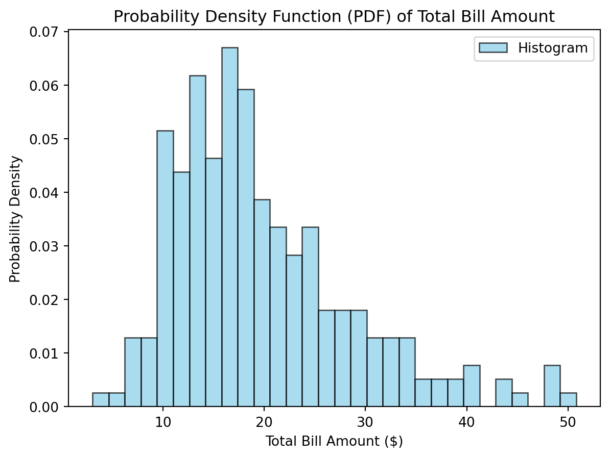

Probability is a major part of the underlying pieces of Machine Learning. When preforming actual tasks, it is not immediately apparent the role that it plays. Machine learning is all about defining the probability that some data relates to a class. Two examples that show probability in action are the Probability Density Function (PDF) and the Kernel Density Estimation (KDE). A histogram is another useful probability plot that shows the actual value distributions of the data in a density form. Shown below is an example of a PDF using the skl iris dataset. It plots the density of sepal length and how present each data point was within the set. It is a jagged plot due to the small amount of data points available.
Histogram
Here is a histogram of the iris data.
Creating the Histogram
import numpy as npimport matplotlib.pyplot as pltfrom sklearn.datasets import load_iris# Load the Iris datasetiris = load_iris()sepal_length_setosa = iris.data[iris.target ==0][:, 0] # Sepal length of Iris setosa# Define a function to compute the probability density function (PDF)def compute_pdf(data, num_bins=20):""" Compute the probability density function (PDF) of a dataset. Parameters: - data: Input dataset. - num_bins: Number of bins for the histogram. Returns: - bin_edges: Bin edges. - pdf_values: PDF values for each bin. """ hist, bin_edges = np.histogram(data, bins=num_bins, density=True) bin_centers = (bin_edges[:-1] + bin_edges[1:]) /2 pdf_values = hist / np.sum(hist)return bin_centers, pdf_values# Compute the PDF for sepal length of Iris setosabin_centers, pdf_values = compute_pdf(sepal_length_setosa)# Plot the PDFplt.plot(bin_centers, pdf_values, label='PDF - Sepal Length (Iris setosa)')plt.title('Probability Density Function (PDF) of Sepal Length (Iris setosa)')plt.xlabel('Sepal Length (cm)')plt.ylabel('Probability Density')plt.legend()plt.show()
KDE/PDF
Here is an example of a KDE/PDF plot. This shows the estimated density if the data and model were to be generalized. This is the distribution on a larger dataset and the predictions the model would make on a larger test. A PDF is almost the same except it is a rounded curve using the current data set.
Creating the KDE
from sklearn.neighbors import KernelDensity# Reshape the data to fit the input requirements of KernelDensitysepal_length_setosa = sepal_length_setosa.reshape(-1, 1)# Fit the Kernel Density Estimation modelkde = KernelDensity(bandwidth=0.6, kernel='gaussian')kde.fit(sepal_length_setosa)# Generate data points for the plotx_values = np.linspace(min(sepal_length_setosa), max(sepal_length_setosa), 1000).reshape(-1, 1)# Score_samples returns the log likelihood of the sampleslog_density_values = kde.score_samples(x_values)# Plot the Kernel Density Estimationplt.plot(x_values, np.exp(log_density_values), label='Kernel Density Estimation (KDE)')plt.title('Kernel Density Estimation (KDE) of Sepal Length (Iris setosa)')plt.xlabel('Sepal Length (cm)')plt.ylabel('Probability Density')plt.legend()plt.show()
These are another example of the same plots (Histogram and KDE/PDF) using a different dataset.
Histogram
Creating the Histogram
import numpy as npimport matplotlib.pyplot as pltimport seaborn as sns# Load the tips dataset from Seaborntips = sns.load_dataset('tips')total_bill_data = tips['total_bill']# Create a histogram to estimate the probability density function (PDF)plt.hist(total_bill_data, bins=30, density=True, alpha=0.7, color='skyblue', edgecolor ="black", label='Histogram')# Plot formattingplt.title('Probability Density Function (PDF) of Total Bill Amount')plt.xlabel('Total Bill Amount ($)')plt.ylabel('Probability Density')plt.legend()plt.show()

PDF/KDE
You can clearly see that in this plot compared to the previous, the curve is smoothed. This is to generalize the data and not overfit on the training set, it will get more realistic predictions on future data.
Creating the PDF
import matplotlib.pyplot as pltimport seaborn as sns# Load the tips dataset from Seaborntips = sns.load_dataset('tips')total_bill_data = tips['total_bill']# Create a Kernel Density Estimation (KDE) plot for the PDFsns.kdeplot(total_bill_data, fill=True, color='blue', label='Probability Density Function (PDF)')# Plot formattingplt.title('Probability Density Function (PDF) of Total Bill Amount')plt.xlabel('Total Bill Amount ($)')plt.ylabel('Probability Density')plt.legend()plt.show()